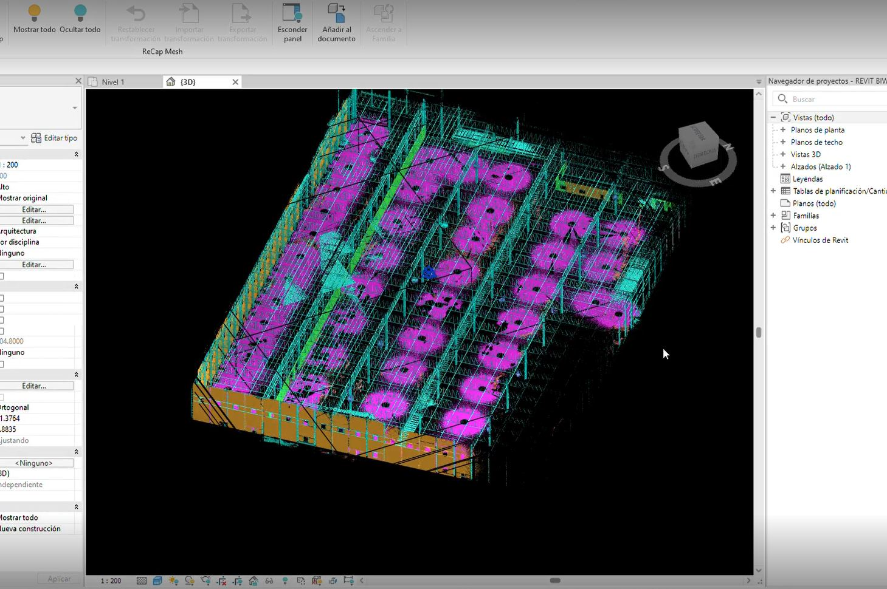
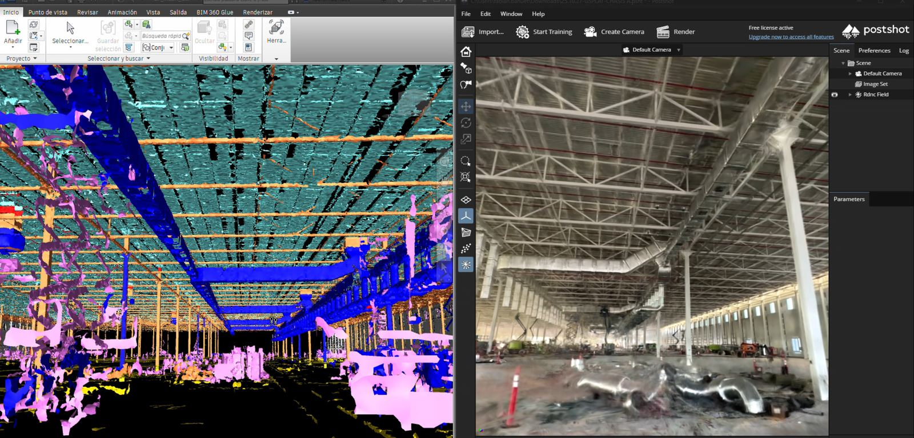
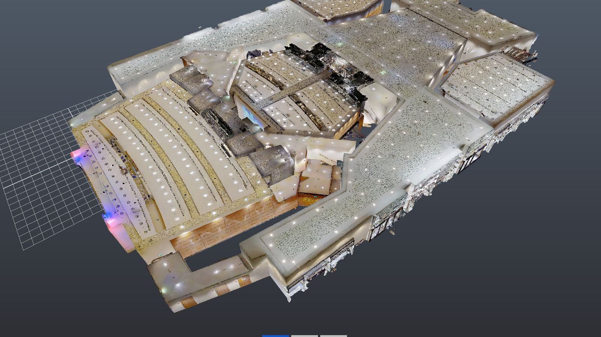
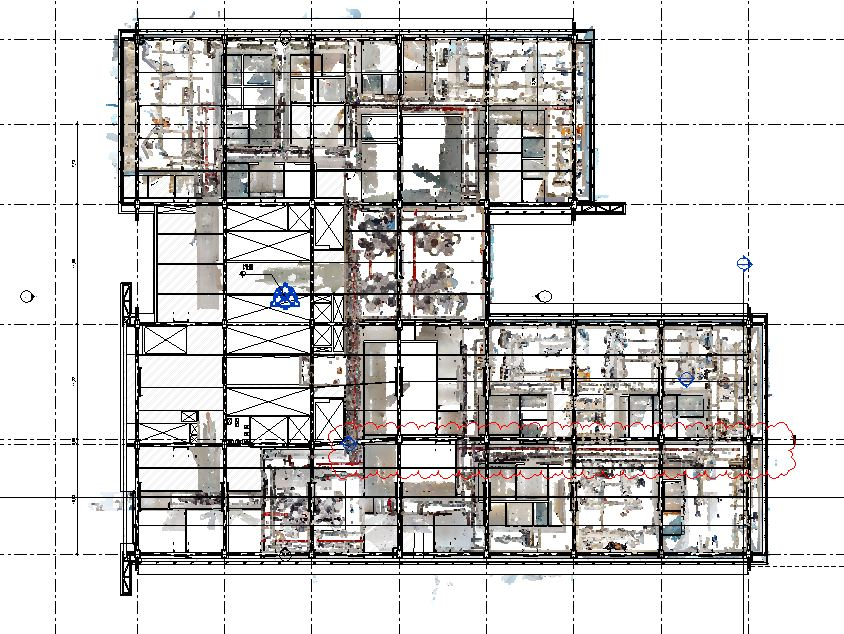
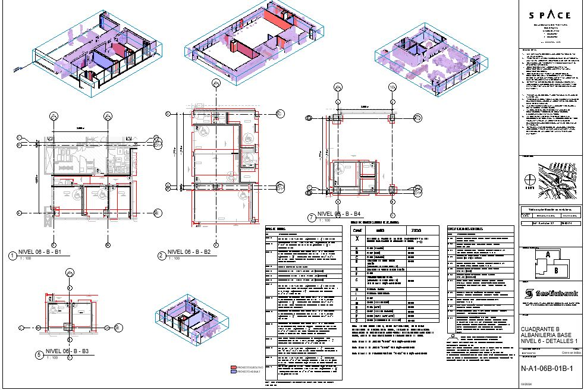
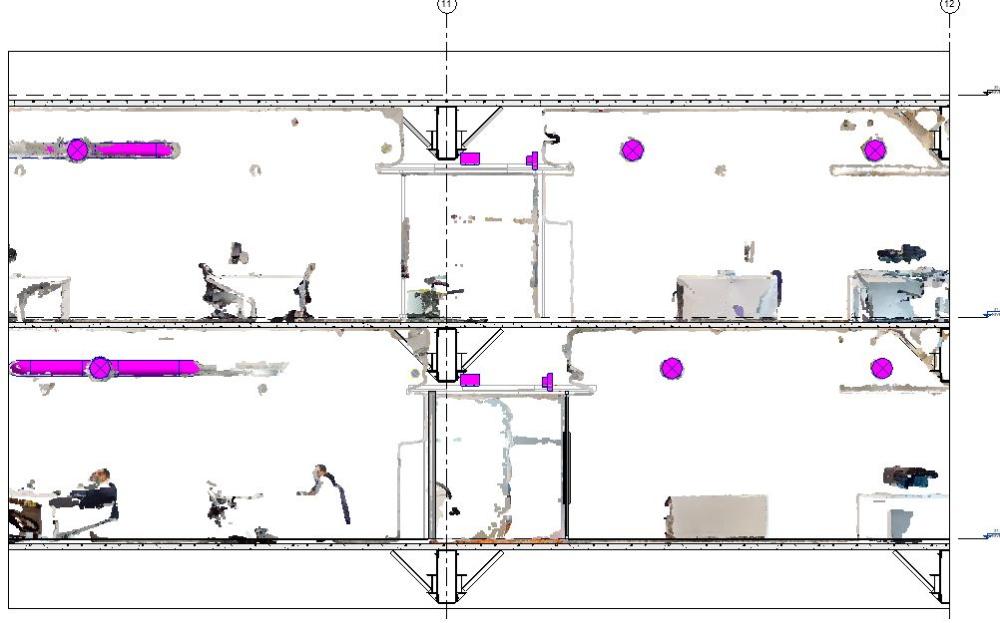
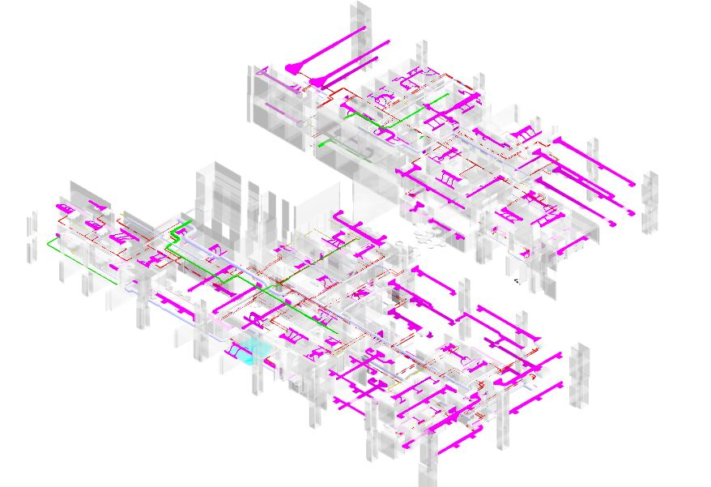

Dos productos que conforman el servicio Scan to BIM.






Asbuilt
Actualizamos los modelos y planos de la etapa de diseño, coordinando todos los cambios generados durante la etapa de ejecución. Recopilamos especificaciones, órdenes de cambio, boletines y cambios geométricos de todas las especialidades del proyecto: arquitectura, civil, estructuras y MEP. Liberamos toda la bandera de planos documentados actualizados con las condiciones reales existentes del proyecto.




Coordinación Ejecución
Desarrollamos talleres con los proveedores y contratistas de cada especialidad. Controlamos los procesos de revisión de planos, memorias y modelos BIM para integrar las condiciones finales en toda la documentación de proyecto.